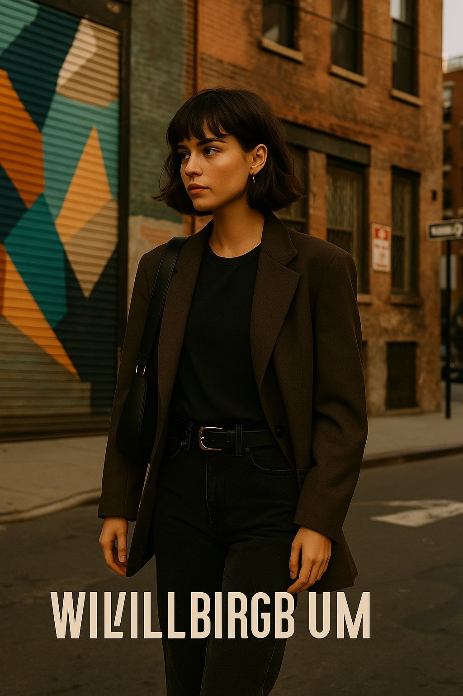
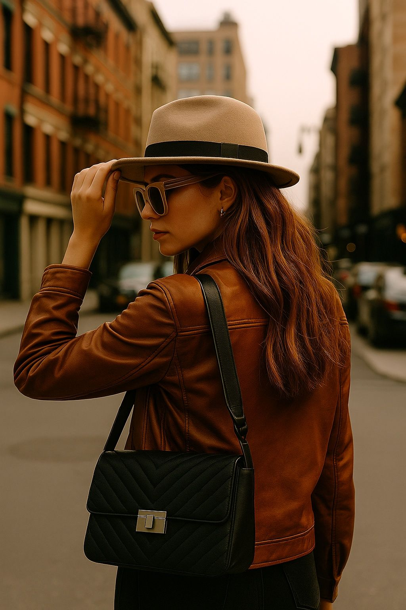

From Sidewalks to Skylines: The Real Fashion Pulse of New York in 2025

New York City in 2025 isn’t dressing for the runway — it’s dressing for the revolution. In this article, we break down the real street fashion that pulses through the veins of NYC’s boroughs.
1. Bushwick’s Artistic Boldness
Bushwick doesn’t whisper style — it yells it in neon, graffiti and upcycled leather. Think patchwork coats over graphic tees, boots with history, and attitude for days.
2. Soho’s Minimalist Edge

Monochrome palettes, oversized silhouettes, and $6 coffee — Soho hasn’t changed much, but in 2025 it feels sharper, sleeker, more curated than ever.
3. Harlem’s Cultural Power
Gold hoops, denim layers, vibrant prints. Harlem’s fashion speaks of pride, roots and rhythm. Every street corner is a photo shoot waiting to happen.
4. Upper East Side Elegance Reloaded

Cashmere and confidence. In 2025, old money style is mixing with Gen Z tailoring: loafers meet rebellion. And it’s stunning.
5. Williamsburg’s Remix Vibes

A bucket hat, platform sneakers, and a 90s bag: Williamsburg’s fashion is chaotic-good. And it knows it.
Published: 2025-05-13
← Back to ArticlesHow NYC Compares to Other Style Capitals
While Paris whispers elegance and Tokyo experiments with precision, New York screams individuality. In 2025, NYC is louder, freer, and more unapologetic than ever — but always with purpose. CDMX, for instance, shares its energy, but not its edge.
How to Bring NYC Vibes to Your Own City
You don’t have to live in New York to dress like it. Layer fearlessly. Mix textures. Wear something that feels “too bold” and walk like it’s normal. That’s the New York spirit: self-assurance.
Final Thoughts
In 2025, New York isn’t dressing for Instagram. It’s dressing to survive, to provoke, to say something — and maybe to get a slice after. If you want fashion that has teeth, blood, rhythm and grime, look at the sidewalk. It’s louder than the runway.